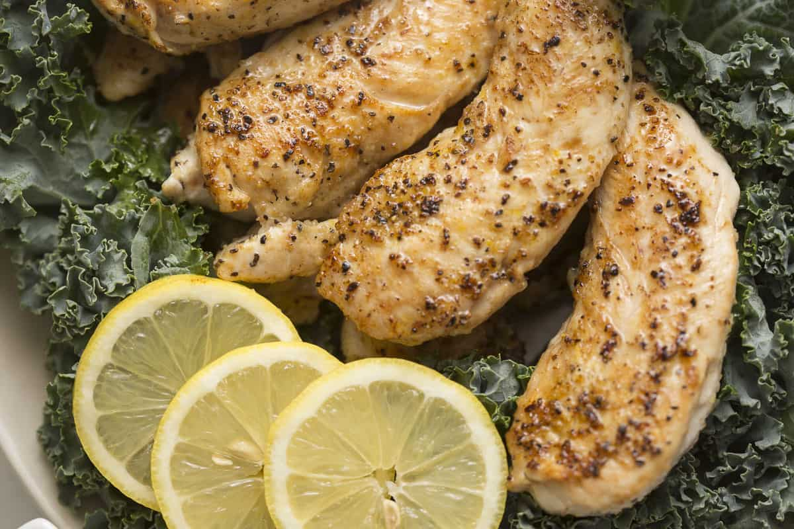

Home
How to make sous vide chicken

Image of prepared lemon pepper chicken, just one of the many great ways to prepare sous vide chicken!
Ingredients
- Package of chicken breast
- Vacuum Sealer(recommended) or ziplock bags
- Season of choice
Preperation Steps
- Preheat your Sous Vide to 160 degrees.
- Place your chicken breast into a vacuum sealed bag with seasoning or marinade of choice.
- Once the Sous Vide is preheated(crucial), place chicken breasts into the water and ensure they are below the surface.
- Let the chicken sit in the water for at least 1 hour, then remove.
- Preheat a cast iron skillet to a high temperature and sear each side of the breast for about 3 minutes each. This creates a crunchy flavorful exterior while maintaining the juicy interior.
- That's it! You have successfully made sous vide chicken!